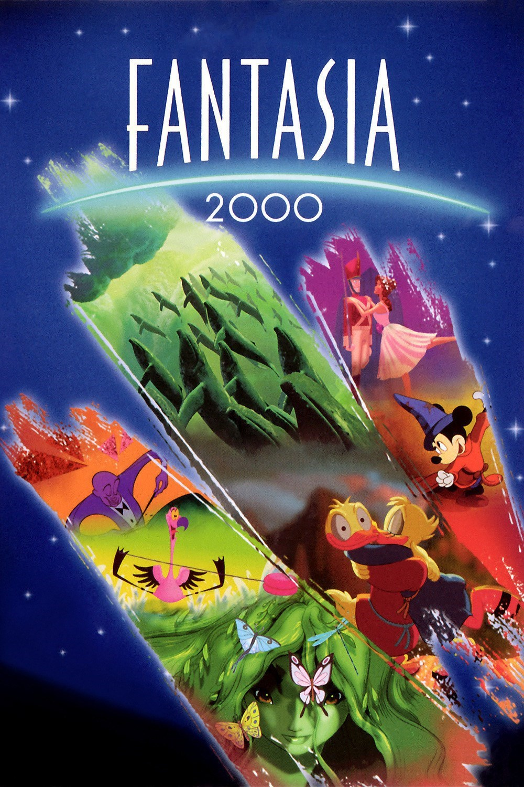

Fantasia 2000 / 2000 / Rating: 5/5
Sixty years after the release of Disney's classic 1940 experiment in sight and sound, a new generation of Disney animators and filmmakers offer an exciting showcase for today's audiences as they visually interpret classical compositions by Beethoven, Shostakovich, Respighi, Gershwin, Dukas, Saint-Saens, Elgar, and Stravinsky. This animated extravaganza features seven new selections and one returning favorite from the original classic. World renowned conductor James Levine takes up the baton and leads the Chicago Symphony Orchestra. Like its pioneering predecessor, "Fantasia/2000" embraces all the latest technological tools and innovations to tell its stories and create breathtaking imagery.